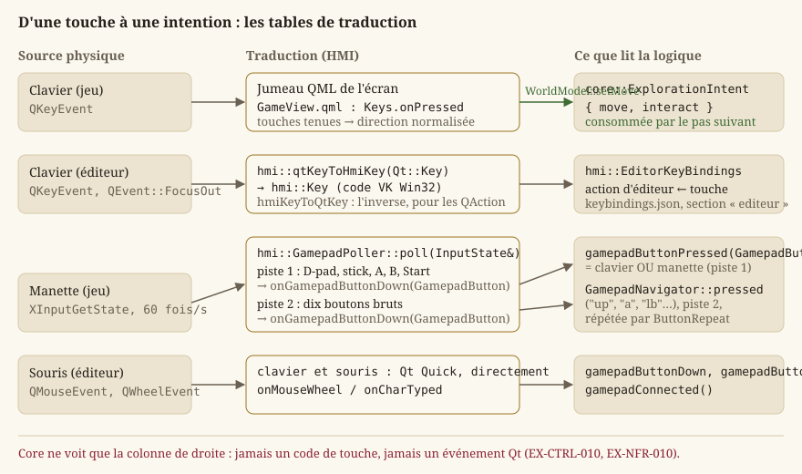
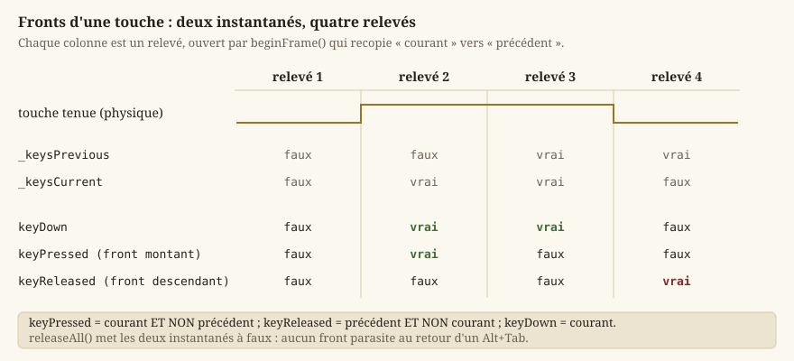

Entrées et actions logiques
Cette page explique comment une touche physique devient un déplacement du personnage, et pourquoi ce trajet passe par une étape intermédiaire qui, au premier abord, peut sembler superflue. Elle couvre tout Source/HMI/Input (InputState.h, QtKeyMap.h, GamepadButton.h, GamepadPoller.h, ButtonRepeat.h) et le pont manette du jeu Qt Quick (Source/HMI/Runtime/GamepadNavigator.h), puis les deux briques qui s'appuient dessus : les raccourcis de l'éditeur et la langue de l'interface.
Le principe : ne jamais coder « en dur » une touche dans le gameplay
Le gameplay ne dépend jamais directement d'une touche physique (EX-CTRL-010). Autrement dit, core::ExplorationSession ne contient aucun test du genre « si la touche flèche gauche est enfoncée ». À la place, les entrées brutes (clavier, manette) sont d'abord traduites en une intention neutre — « aller vers le nord-ouest », « interagir » — que Core consomme sans jamais savoir quelle touche a produit cette intention.
Pourquoi cette indirection. Sans elle, chaque logique qui a besoin d'une entrée devrait connaître les touches physiques, ce qui pose plusieurs problèmes concrets :
- plusieurs touches, une commande — les flèches,
ZQSDetWASDdéplacent tous le héros,EetEspaceinteragissent tous deux (EX-CTRL-022) ; un seul point de traduction évite de répéter cette correspondance dans chaque logique ; - tests plus difficiles — tester l'exploration obligerait à simuler de vrais événements clavier plutôt qu'à construire directement une intention
{ .move = {1, 0}, .interact = true }; - couplage entre
CoreetHMI—Coren'a aucune dépendance à la fenêtre ni à Qt (EX-NFR-010) ; lui faire connaître des codes de touche briserait cette frontière architecturale.
Le trajet complet est donc : touche physique → événement Qt → traduction (HMI ou jumeau QML) → core::ExplorationIntent (intention) → Core (logique de jeu). Les premières étapes vivent du côté de la présentation, la dernière dans Core, indépendante.
{kind=link}

L'intention : core::ExplorationIntent
core::ExplorationIntent est le contrat de données entre la présentation et l'exploration :
move: la direction voulue, uncore::Vector2de longueur au plus 1 — déjà normalisée, pour qu'une diagonale n'aille pas plus vite qu'une ligne droite (Mathématiques du moteur). Deux touches opposées enfoncées ensemble se neutralisent plutôt que de privilégier arbitrairement l'une ;interact: vrai le pas où le joueur demande l'interaction — un appui ponctuel, pas un état maintenu.
Core ne reçoit que cette structure : il ignore totalement l'existence des touches et boutons physiques. Deux traducteurs la construisent, un par application :
- dans le jeu, l'écran d'exploration (
Source/App/Game/Qml/Screens/GameView.qml) tient les directions enfoncées (flèches,Z/W,Q/A,S,D), en compose la direction normalisée et la pousse àhmi::WorldModel::setMoveà chaque appui ou relâchement ;E/Espaceappellenthmi::WorldModel::interact,Échapouvre la pause.WorldModelrange l'intention et la remet à la session au pas suivant (Boucle de jeu et pas de temps fixe) ; - dans l'essai immédiat de l'éditeur,
hmi::EditorViewportretient les touches enfoncées (mêmes touches que le jeu) et compose la même direction ;E/Espacelèvent une demande d'interaction,Échaparrête l'essai.
Dans les deux cas, la demande d'interaction est consommée par le premier pas qui la lit, puis remise à zéro. Un appui ne se perd donc jamais entre deux pas, et ne se répète pas non plus : la latence entrée → effet reste bornée à un pas (EX-CTRL-020).
Perte de focus. À un Alt+Tab (ou tout basculement de fenêtre), la vue ne reçoit pas d'événement de relâchement pour les touches maintenues. Sans précaution, une direction maintenue resterait « collée » et le personnage avancerait seul au retour. hmi::EditorViewport traite donc QEvent::FocusOut en oubliant toutes les touches tenues ; côté InputState, c'est le rôle de releaseAll (plus bas).
Le vocabulaire : hmi::Key, hmi::MouseButton, hmi::GamepadButton
Trois énumérations nomment ce que la présentation sait observer. Elles sont dans HMI/Input, jamais dans Core (EX-NFR-011).
hmi::Key : une touche, par son code virtuel Win32
hmi::Key identifie une touche du clavier par son code virtuel Win32 (VK_*) : Escape vaut 0x1B, Left 0x25, A 0x41, F10 0x79… Ce choix, hérité de la fenêtre Win32 d'origine, est conservé parce qu'il coûte zéro table : un code brut se range dans InputState par un simple static_cast, et l'énumération n'a besoin de nommer que les touches utiles (menus, ZQSD/ WASD, E, Ctrl, Maj, 0, F1, F2, F10 et quelques lettres de l'éditeur). Ajouter une touche revient à ajouter un énumérateur : InputState stocke déjà n'importe quel code sur 256 entrées (KEY_COUNT). Le fichier des raccourcis de l'éditeur enregistre d'ailleurs ce code brut.
hmi::MouseButton
Left, Right, Middle, et la sentinelle Count (3), qui n'est pas un bouton : elle dimensionne les tableaux d'état. C'est le patron classique d'une énumération dont on veut connaître la taille sans la recompter à la main.
hmi::GamepadButton
Dix boutons ou directions logiques de la manette (EX-CTRL-002) : Up, Down, Left, Right, A, B, X, Y, LeftShoulder, RightShoulder ; hmi::GAMEPAD_BUTTON_COUNT en donne le nombre. Deux décisions y sont inscrites :
- les quatre directions fusionnent le D-pad et le stick gauche : le joueur ne perçoit pas la différence, et le sondage les a toujours traités comme équivalents ;
Start/Back, les clics de stick et les gâchettes analogiques ne sont pas représentés : conventions globales (Start ouvre la pause, commeÉchap) ou hors périmètre.
La table de traduction Qt : hmi::qtKeyToHmiKey et hmi::hmiKeyToQtKey
L'éditeur reçoit ses touches par QKeyEvent, dont le code est un Qt::Key. HMI/Input/QtKeyMap.h fait la correspondance dans les deux sens :
hmi::qtKeyToHmiKey(int qtKey)renvoiestd::optional<hmi::Key>: la touche suivie, ounulloptpour une touche que le moteur n'observe pas. Les lettres, chiffres et l'espace partagent déjà la même valeur entre Qt et Win32 (Qt::Key_A == 0x41 == VK 'A') ; seules les touches spéciales (flèches,Échap,Tab,Maj,Ctrl,F1/F2/F10) passent par une correspondance explicite ;hmi::hmiKeyToQtKey(hmi::Key)est l'inverse : il sert à faire refléter un remappage dehmi::EditorKeyBindingssur le raccourci effectif d'unQAction(hmi::EditorActions::applyShortcuts). Comme à l'aller, tout code non nommé explicitement est converti tel quel.
Pourquoi une table plutôt que d'adopter Qt::Key partout. InputState et les tests qui le couvrent sont indépendants de Qt (EX-NFR-010) ; la table est la seule ligne de contact, et elle est testable seule.
Échantillonner plutôt que réagir : hmi::InputState
Deux façons classiques d'observer les entrées existent :
- piloté par les événements : le code réagit immédiatement à chaque message du système d'exploitation (« touche enfoncée », « touche relâchée ») dès qu'il arrive, à un instant arbitraire ;
- échantillonné (polling) : le code lit un état courant, mis à jour à intervalle régulier, à un instant prévisible.
Le clavier arrive par événements Qt ; la manette, elle, n'en produit pas : il faut la sonder. hmi::InputState est l'état échantillonné qui reçoit ces relevés — indépendant de toute fenêtre (aucune dépendance <Windows.h>, <Xinput.h> ni Qt dans son en-tête), si bien que les tests (Source/Test/Unit/HMI/Input/test_input_state.cpp) y injectent directement touches et boutons, sans manette réelle (EX-NFR-010).
Détecter les fronts, pas seulement l'état
Savoir qu'un bouton est enfoncé ne suffit pas : une interface doit distinguer plusieurs questions liées mais différentes (EX-CTRL-011) :
- « le bouton vient-il d'être pressé ? » (le front montant) — valide un choix, une seule fois par appui ;
- « le bouton est-il maintenu ? » — fait défiler une liste tant qu'on tient la croix ;
- « le bouton vient-il d'être relâché ? » (le front descendant).
InputState calcule ces trois fronts en gardant deux instantanés : l'état courant et celui du relevé précédent. Un bouton est « pressé » (front montant) précisément quand il est enfoncé maintenant mais ne l'était pas au relevé d'avant ; de même, « relâché » (front descendant) quand il ne l'est plus mais l'était juste avant. Sans conserver cet historique, on ne pourrait connaître que l'état courant (keyDown), jamais le moment précis de transition (keyPressed/keyReleased) — pourtant essentiel aux actions ponctuelles, à déclencher une seule fois par appui.
{kind=link}

// keyDown : vraie si enfoncée maintenant, quelle que soit la source (clavier OU manette).
bool InputState::keyDown(Key key) const noexcept {
return _keysCurrent[index] || _gamepadCurrent[index];
}
// keyPressed (front montant) : enfoncée maintenant, mais ne l'était sur AUCUNE source
// au relevé précédent.
bool InputState::keyPressed(Key key) const noexcept {
const bool keyboardEdge = _keysCurrent[index] && !_keysPrevious[index];
const bool gamepadEdge = _gamepadCurrent[index] && !_gamepadPrevious[index];
return keyboardEdge || gamepadEdge;
}Remarque sur la fusion manette (détaillée plus bas) : keyPressed calcule un front par source puis les combine par OU logique — un bouton manette pressé alors que la touche clavier équivalente était déjà maintenue produit bien un nouveau front (celui de la manette), sans que le clavier « masque » cette pression.
Le cycle d'un relevé
hmi::InputState::beginFramerecopie l'état courant vers l'état précédent, remet à zéro l'incrément de molette et vide la file des caractères tapés : la fenêtre d'observation du relevé s'ouvre ;- les sources mettent à jour l'état courant (
onKeyDown/onKeyUp,onGamepadKeyDown/…,onGamepadButtonDown/…,onMouseMove/…) ; - le lecteur interroge les fronts et l'état (
keyPressed,gamepadButtonPressed, …).
hmi::InputState::releaseAll remet à zéro l'état courant et précédent de toutes les touches et de tous les boutons — sans produire de front « relâché » parasite (courant == précédent == relâché). C'est ce qu'appelle un lecteur qui cesse d'écouter (perte de focus, GamepadNavigator désactivé).
L'interface complète, fonction par fonction
| Fonction | Rôle | Invariant |
|---|---|---|
hmi::InputState::onKeyDown / onKeyUp | Source clavier : marque une Key enfoncée ou relâchée dans l'état courant. | N'écrit jamais dans les tableaux manette. |
hmi::InputState::onGamepadKeyDown / onGamepadKeyUp | Source manette, même espace de Key (navigation de menu). | Tableau distinct du clavier : relâcher un bouton n'efface jamais une touche clavier tenue. |
hmi::InputState::onGamepadButtonDown / onGamepadButtonUp | Piste brute par GamepadButton, pour les actions de jeu. | Indépendante de la fusion ci-dessus. |
hmi::InputState::setGamepadConnected / gamepadConnected | Déclare et relit la présence d'une manette au dernier relevé. | Posé par GamepadPoller::poll à chaque sondage effectif. |
hmi::InputState::keyDown / keyPressed / keyReleased | État et fronts d'une Key, clavier OU manette. | Le front se calcule par source puis se combine. |
hmi::InputState::gamepadButtonDown / gamepadButtonPressed / gamepadButtonReleased | État et fronts d'un GamepadButton. | Même règle courant/précédent. |
hmi::InputState::onMouseMove ; mouseX / mouseY | Position de la souris en pixels de la zone client (origine haut-gauche). | Conservée d'un relevé à l'autre : rien ne la remet à zéro. |
hmi::InputState::onMouseButtonDown / onMouseButtonUp ; mouseButtonDown / mouseButtonPressed / mouseButtonReleased | État et fronts d'un MouseButton. | Même règle. |
hmi::InputState::onMouseWheel ; wheelDelta | Accumule les crans de molette du relevé (unités natives Win32, WHEEL_DELTA = 120 par cran, signé : positif vers l'avant). | Somme remise à zéro par beginFrame ; l'appelant convertit. |
hmi::InputState::onCharTyped ; typedCharacters | File des caractères déjà traduits par la disposition clavier (WM_CHAR), dans l'ordre de saisie. | Vidée par beginFrame. Un champ de texte lit des caractères, jamais des Key. |
hmi::InputState::beginFrame / releaseAll | Ouvre un relevé ; relâche tout sans front. | Voir ci-dessus. |
La souris et les caractères tapés ne servent aujourd'hui qu'à l'éditeur, et le jeu Qt Quick reçoit sa souris par les événements de ses éléments ; ils restent dans InputState parce que l'état échantillonné doit être complet pour qu'un lecteur n'ait qu'une seule source à interroger.
La manette : une seconde source, fusionnée en lecture (EX-CTRL-002)
InputState ne connaît qu'un seul hmi::Key par touche, mais deux sources indépendantes qui peuvent l'enfoncer : le clavier (onKeyDown/onKeyUp) et la manette (onGamepadKeyDown/ onGamepadKeyUp), chacune avec sa propre paire courant/précédent. keyDown/keyPressed/ keyReleased combinent les deux (OU logique) au moment de la lecture — jamais à l'écriture.
Pourquoi pas une seule table partagée ? Parce que la manette est sondée, pas événementielle : hmi::GamepadPoller::poll interroge XInput à chaque relevé et doit explicitement relâcher (onGamepadKeyUp) chaque touche dont le bouton correspondant n'est plus enfoncé — y compris quand la manette est débranchée. Si ce relâchement écrivait dans la même table que le clavier, il effacerait une touche clavier réellement maintenue dès que la manette (absente ou relâchée) ne la tient plus. Deux tables, combinées seulement en lecture, rendent ce bug structurellement impossible plutôt que de compter sur la discipline du code appelant.
Chaque direction manette synthétise le même Key fixe que son équivalent clavier (D-pad et stick gauche → Left/Right/Up/Down ; A → Enter et Space ; B/Start → Escape) — câblage en dur dans hmi::GamepadPoller::poll.
Une seconde piste, brute, par bouton. À partir du même relevé XInput, GamepadPoller::poll alimente aussi un état par hmi::GamepadButton (onGamepadButtonDown/onGamepadButtonUp, InputState::gamepadButtonDown/gamepadButtonPressed) — dix boutons et directions. C'est cette piste que lit le jeu.
Note — Les commentaires de
InputState.hetGamepadPoller.hcitent unGamepadBindings« remappable » : cette classe n'existe pas dans le dépôt. Le remappage des boutons manette n'est pas implémenté ; la piste brute est lue telle quelle parhmi::GamepadNavigator.
hmi::GamepadPoller : sonder XInput sans fenêtre
hmi::GamepadPoller est un objet à état (dernier état de connexion, horodatage du dernier sondage), à appeler une fois par relevé, avant que la logique ne consomme les entrées. Sa seule fonction publique, hmi::GamepadPoller::poll(InputState&), sonde le joueur 0 et alimente les deux pistes. Le sondage XInput lui-même (<Xinput.h>) vit ici, jamais dans InputState, extrait de l'ancienne fenêtre Win32 pour être réutilisable par n'importe quel hôte Qt sans dépendre d'une fenêtre. Un changement de connexion est journalisé une fois, pas à chaque relevé.
Sondage espacé quand aucune manette n'est branchée. XInputGetState est notablement coûteux quand le slot interrogé est vide : le pilote énumère les périphériques à chaque appel. Le sonder à chaque relevé alors qu'aucune manette n'est connectée provoque des micro-saccades chez un joueur clavier. hmi::GamepadPoller::poll ne re-sonde donc un slot resté déconnecté qu'une fois par hmi::GAMEPAD_DISCONNECTED_PROBE_PERIOD (2 s) ; entre-temps l'état reste « déconnecté ». Dès qu'une manette est présente, le sondage redevient systématique — un branchement à chaud est détecté au plus tard après une période.
La décision est prise par hmi::gamepadProbeDue(wasConnected, sinceLastProbe), une fonction constexpr pure : vraie si une manette était présente au dernier sondage, sinon seulement si la période est écoulée. Elle compte en temps réel et non en nombre d'appels, parce que le sondage est déclenché tantôt par la boucle de rendu (une fois par image), tantôt par un temporisateur d'interface bien plus lent : un compteur d'appels ferait varier le délai de détection dans un rapport de plus de cent selon l'appelant. L'horodatage initial du GamepadPoller est l'époque, si bien que le tout premier appel sonde toujours.
hmi::ButtonRepeat : répéter un bouton tenu
Une touche fléchée tenue au clavier se répète, parce que le système le fait pour nous ; XInput ne répète rien. Un curseur de ciblage qu'on déplace à la croix doit pourtant avancer d'une case par appui et traverser une salle si l'on tient la croix (LOT-24). hmi::ButtonRepeat est ce compteur, sans horloge à lui : hmi::ButtonRepeat::update(down, now) reçoit l'état du bouton et l'instant courant, et renvoie vrai si le bouton produit un pas maintenant — à l'appui, puis, une fois hmi::BUTTON_REPEAT_DELAY (350 ms) passé, à chaque hmi::BUTTON_REPEAT_INTERVAL (110 ms). Relâcher remet le compteur à zéro. Le temps lui étant donné, un test le fait avancer sans attendre.
Dans le jeu : hmi::GamepadNavigator
Qt 6 n'a plus de module manette, et le jeu Qt Quick du LOT-86 liait xinput sans jamais le lire. hmi::GamepadNavigator (Source/HMI/Runtime) est le pont, exposé au QML comme élément (QML_ELEMENT) :
- la propriété
active(lecture/écriture) dit si l'écran écoute la manette. Tant qu'elle est vraie, unQTimersonde soixante fois par seconde :InputState::beginFrame, puisGamepadPoller::poll. Passée à faux, le timer s'arrête etreleaseAlloublie tout : un écran qui n'écoute pas la manette ne la paie pas ; - la propriété
connected(lecture seule) reflèteInputState::gamepadConnected; - le signal
pressed(const QString& button)est émis avec le nom du bouton —up,down,left,right,a,b,x,y,lb,rb. La croix et le stick passent par quatreButtonRepeat(un par direction) et se répètent quand on les tient ; les autres boutons n'émettent qu'au front montant (gamepadButtonPressed).
Il ne sait rien de ce que l'écran en fait : c'est le jumeau QML de l'écran (le Colisée, la carte du monde) qui traduit un nom en geste, comme il traduit une touche. Ce partage des rôles reproduit celui du clavier : la traduction reste dans la présentation, et Core ne voit qu'une intention.
Le menu d'options
La page Options du jeu est en QML (Source/Ui/Screens/OptionsForm.ui.qml, câblée par Source/App/Game/Qml/Screens/Options.qml) ; elle lit et écrit hmi::OptionsModel, qui persiste chaque réglage : plein écran, V-Sync (EX-REN-022), volume, langue, journaux de diagnostic. Le jeu ne propose pas de remappage des touches (Écrans, navigation et boucle de jeu).
Les raccourcis de l'éditeur : hmi::EditorKeyBindings
Les raccourcis de l'éditeur sont reconfigurables par fichier (EX-CTRL-012) : hmi::EditorKeyBindings (Source/Editor/Logic) associe chaque hmi::EditorAction (Sauvegarder, Annuler, Refaire, Copier, Coller, Essai, Grille, Aide, Renommer — EDITOR_ACTION_COUNT = 9) à une hmi::Key, lue au démarrage depuis la section "editeur" de keybindings.json, à côté de l'exécutable. hmi::EditorViewport la charge ; hmi::EditorActions::applyShortcuts en fait les raccourcis des actions Qt du menu et de la barre d'outils (par hmi::hmiKeyToQtKey) — une seule source, jamais un second traitement dans la vue.
- Le fichier stocke le code VK brut de la touche (
hmi::Keyen est déjà un). setKeyéchange avec toute autre action déjà sur cette touche plutôt que de dupliquer : jamais deux actions sur la même touche.- Le modificateur
Ctrlde Sauvegarder/Annuler/Refaire/Copier/Coller reste câblé en dur ; seule la touche-lettre est remappable. Certains gestes (Supprde l'outil Entité, recadrage0) restent câblés en dur. - Un fichier absent, corrompu, ou une entrée invalide retombe sur les valeurs par défaut pour l'entrée concernée (
EX-NFR-040), jamais bloquant, avec un avertissement dans le journal.saverelit le fichier existant pour préserver les autres sections plutôt que de les écraser.
Le détail des gestes de l'éditeur (outils, pinceau, sélection) est dans Éditeur de niveaux.
La langue de l'interface : hmi::Localization
Tous les textes d'interface de l'éditeur passent par une clé stable (EX-REN-033) plutôt que par un libellé en dur : hmi::Localization résout une clé (« action.copy ») vers la chaîne de la langue active, chargée depuis un fichier <langue>.lang (format clé = valeur, un fichier par langue dans Source/Elements/Localization/ : fr.lang, en.lang). La résolution suit un repli déterministe — langue active, puis langue par défaut, puis la clé elle-même — pour ne jamais planter ni afficher un vide si une traduction manque (EX-NFR-040), au prix, dans ce dernier cas, d'un texte visiblement « brut » (la clé) plutôt qu'un texte manquant silencieux.
hmi::MainWindow détient l'unique hmi::Localization de l'éditeur : il charge le français par défaut, puis la langue enregistrée (QSettings, clé language) si elle diffère, et propage un retranslateUi() à chaque widget (docks, palette, navigateur, actions). Un échec de chargement (fichier absent) est récupérable : la langue courante est simplement conservée. Le jeu, lui, traduit ses écrans QML par le mécanisme de Qt (qsTr, catalogue jadg_en.ts) ; sa langue se choisit dans Options. Les deux mécanismes sont détaillés dans Données, corpus et ressources.
Voir aussi
core::ExplorationIntent,hmi::WorldModel,hmi::EditorViewport.hmi::InputState,hmi::Key,hmi::MouseButton,hmi::GamepadButton,hmi::qtKeyToHmiKey,hmi::hmiKeyToQtKey.hmi::GamepadPoller,hmi::gamepadProbeDue,hmi::ButtonRepeat,hmi::GamepadNavigator.Source/Ui/Screens/MainMenuForm.ui.qml,OptionsForm.ui.qml— le menu principal et la page Options, en QML ;hmi::OptionsModel.hmi::EditorKeyBindings,hmi::EditorActions— raccourcis de l'éditeur (EX-CTRL-012).hmi::Localization(EX-REN-033).- Boucle de jeu et pas de temps fixe — à quel moment un pas lit l'intention.
- IHM Qt — deux applications, deux technologies — les deux applications qui pilotent tout ceci.
- Écrans, navigation et boucle de jeu — la navigation des menus, au clavier et à la manette.